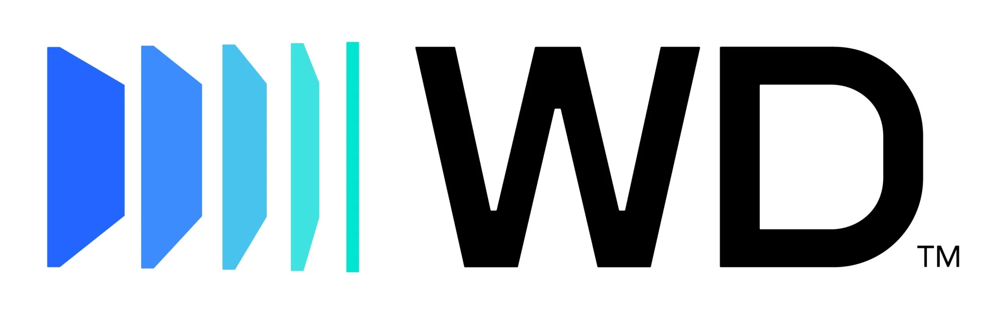
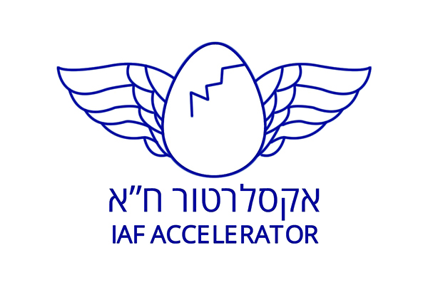
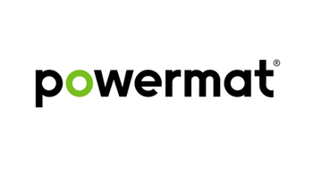
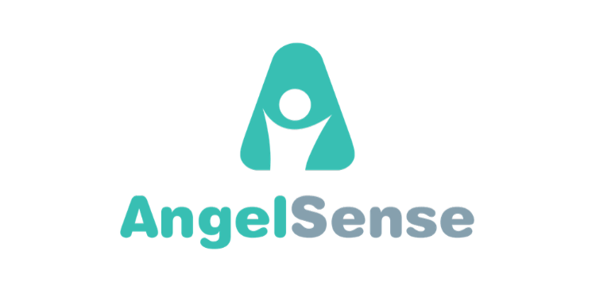

01
Innovation
Generating new ideas, prototyping and testing them in the market. Finding problem–solution fit, product–market fit and business-model fit by applying proven methodologies.
I help startups and global corporations profile their audiences, sharpen value propositions, refine messaging, and ship products people actually want to use.






I've learned through experience that in order to increase chances of business success, one must focus on the humans at the receiving end — the users, the customers, the website visitors, the brochure readers, the marketing campaign targets — addressing their needs and solving their pains.
I help startups and big corporations profile their target audience, crystallize their value propositions, refine their messages, build marketing plans, define marketing collateral, and execute them.
I also lead and mentor innovation processes as the co-founder of the Leanovation consulting group, which helps identify user needs, ideate, prototype and validate products and services in the market.
I have over 20 years of experience launching new products and services into the global market. I got my BA in Computer Science from Tel Aviv University and my Master's in Psychology from the University of Pennsylvania.
Methodology-driven work across the product, marketing and innovation stack — always anchored in the people you're building for.
Generating new ideas, prototyping and testing them in the market. Finding problem–solution fit, product–market fit and business-model fit by applying proven methodologies.
Profiling targets, tailoring value props and messages, picking the right channels, generating content, managing budget, testing, monitoring and optimizing based on data.
Defining prototypes, MVPs, guiding UX work, prioritizing features, and advocating for the end users at every step of the build.
Insights on innovation, marketing, and the human side of technology.
Hagai Heshes speaks on innovation, startups, and human-centered product development.
A live walkthrough showcasing how human-centered design translates into products people actually use.
Whether you're launching a new product, rethinking your go-to-market, or looking to run an innovation sprint — I'd love to hear from you.